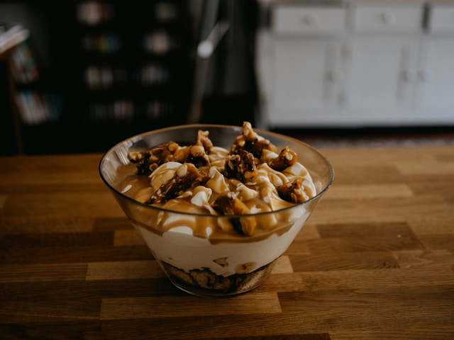

No-Bake Banoffee Pudding Trifles

Description
These no-bake banoffee pudding trifles combine the best of classic banana pudding and banoffee pie in one easy, layered dessert. Graham cracker crumbs, sliced bananas, rich dulce de leche, and creamy vanilla pudding are layered into individual mini trifles, then topped with whipped cream and grated chocolate for a stunning dessert that always impresses.
Ingredients
Graham Layer
- 9 whole graham crackers, finely crushed
- 4 tablespoons unsalted butter, melted
- 1 pinch salt
Pudding Layer
- 1 (3.4 ounce) box instant vanilla pudding mix
- 1 1/2 cups cold whole milk
Whipped Cream
- 8 ounces full-fat cream cheese
- 1/2 cup confectioners sugar
- 1 teaspoon vanilla extract
- 1 pinch salt
- 1 1/4 cups cold heavy whipping cream
For Assembly
- 1 (13.4 ounce) can dulce de leche
- 3 large bananas, peeled and sliced into 1/4-inch thick rounds, or as needed
- grated dark chocolate (optional)
Steps
- Stir graham cracker crumbs, melted butter, and a pinch of salt together in a bowl until combined.
- In a separate bowl, mix together vanilla pudding mix and cold milk until combined. Allow mixture to sit and thicken for 5 minutes. Whisk again briefly once thickened until smooth.
- Beat cream cheese, confectioner's sugar, vanilla, and pinch of salt together in a large bowl with an electric mixer until smooth and combined. Add in heavy cream. Starting on low speed and gradually increasing to medium-high, beat until mixture holds stiff peaks.
- Spoon half of whipped cream mixture into the bowl with pudding, and fold to combine. Reserve remaining whipped cream to use for topping the trifles.
- To assemble, place 2 tablespoons of graham cracker crumb mixture in the bottom of each mini trifle dish, and press down lightly. Place a layer of banana slices over crumbs, then drizzle with 1 to 2 tablespoons dulce de leche. Dollop about 2 tablespoons of pudding mixture over dulce de leche and spread into an even layer.
- Repeat layers with graham cracker crumbs, bananas, dulce de leche, and pudding mixture. Top each trifle with a dollop of the reserved whipped cream; sprinkle with grated chocolate. Refrigerate trifles until chilled, at least 1 hour. If desired, top with an extra banana slice just before serving.
Home